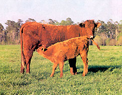

Where can I buy Saler cows and at what price?
JAMES
Prairie Home, Missouri
The Saler (sah-lehr) is an ancient breed, originally from the mountains of France. A distinctive mahogany color, this breed is hardy as an anvil, births easily and is one of the best calf milk-producers of any breed. They all thrive on almost any type of graze and will outlive most cows by several years. In short, Salers are a great homestead cow. They're rare however, so there is no auction market for them and you are on your own, pricewise.
For sturdy, low-maintenance Salers, try:
R.R.#6
Shelburne, Ontario
Canada, L0N 1S9
(519) 925-6412
Fax: (519) 925-1297
E-mail dpease@salerscattle.com
|
 PHOTO: NETTLES BROTHERS RANCH Saler cows are known for their rich mahogany color. |
|
|